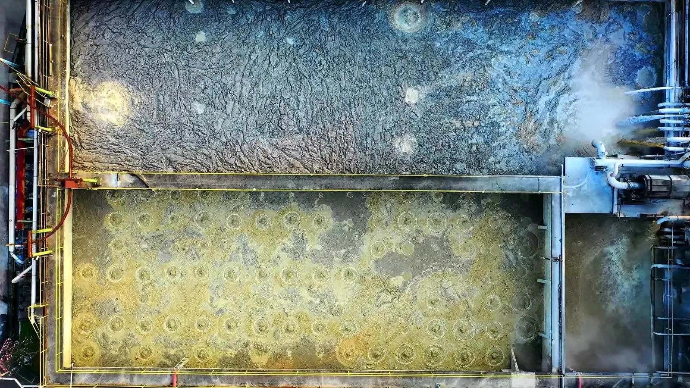
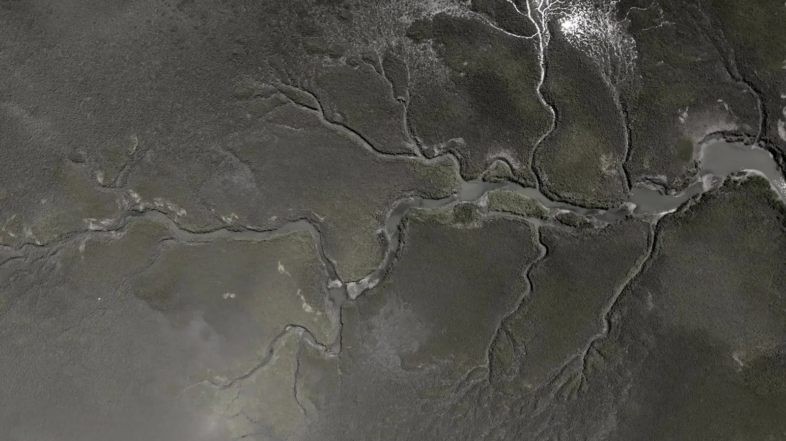
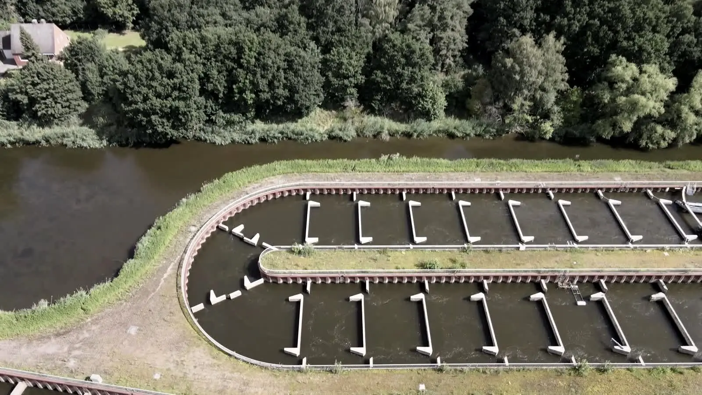
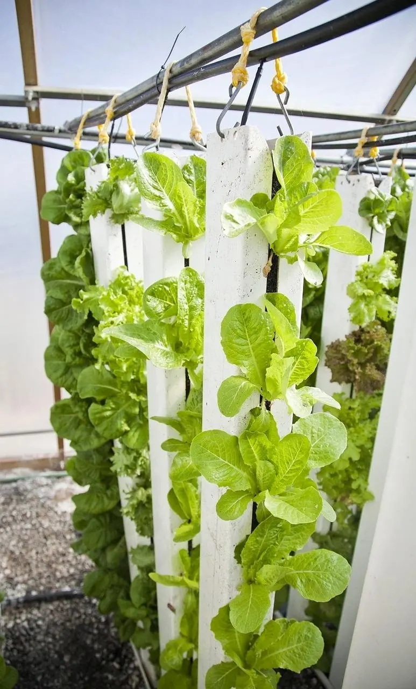
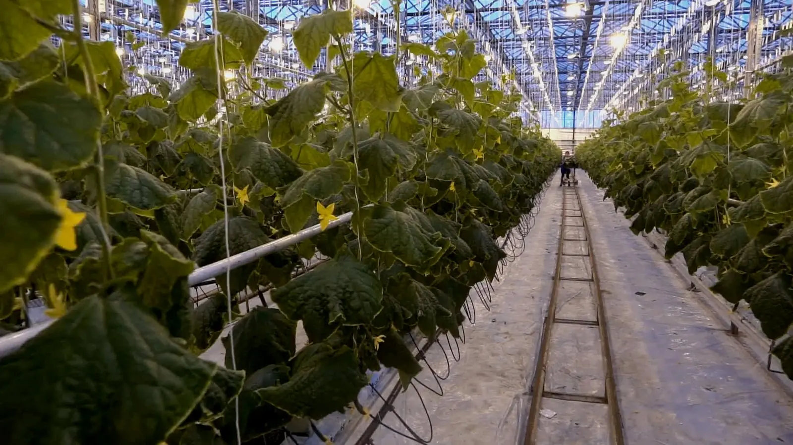
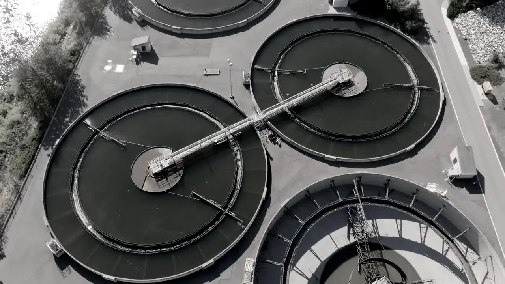
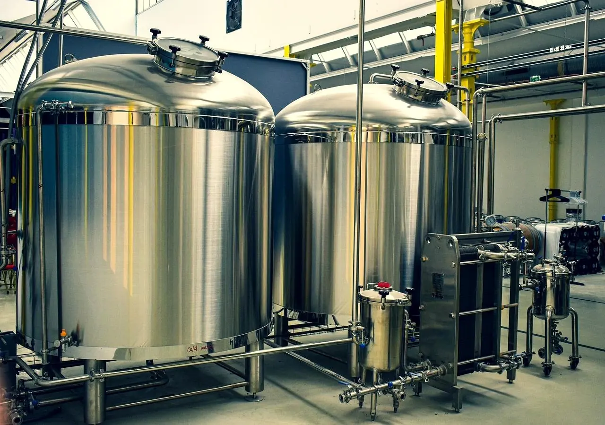

Orbital Ecology / Building worlds that live
Living systems fail in silence.
Every gauge on a closed system measures a consequence. We estimate the state that produced it, and simulate that state forward.
6.5 h of lead · benchmark OE/01S8
The state moves smoothly. The gauge moves all at once.
01 The problem
The variable that decides
the outcome is unmeasured.
Dissolved oxygen is what the biology left behind. Ammonia is what the biofilter has not cleared. Slab EC is a receipt. Every instrument in a closed system reports what the biology already did, so the only safe way to run a process you cannot see is to over-run it. Operators fund margin they cannot size, and the night shift responds to symptoms.
02 The method
Three steps.
One of them changes by domain.
Steps two and three are identical whether the system is a recirculating farm, an activated sludge reactor, a fermenter or a sealed habitat. Only the process model is rewritten. That is why one engine serves seven markets, and why the work compounds across every deployment.
Write the biology down
A mechanistic model of the system: reaction kinetics, transport, uptake, population dynamics. This is the only step that changes between an oyster hatchery and a habitat, and it is where the domain work lives.
Solve backwards
Bayesian state estimation runs that model against the sensors already installed and recovers the state variables no instrument reports, with an uncertainty band, every cycle.
Integrate forward
Push the recovered state ahead in time under the planned operating strategy. The warning hours come from here. The output is a forecast with a stated confidence, not an alarm.
The engine is read-only. It reads existing telemetry, returns a forecast with a confidence band, and touches no control loop. Autonomous control is the roadmap, not the product.
03 Products and trajectory
From the mud
to the moon.
One engine, laid down in layers. NEXUS carries the estimator and every market above it pays for the next one. The capstone is a loop with no resupply and no exit, reachable only because everything under it was proven first. An aquaculture operator still buys an aquaculture product, not a space product.
Closed. Every layer below the capstone is a market today. That is the whole plan: get paid to learn the thing that has to work when there is no resupply.

NEXUSPlatform layerShared
FIELDOpen environmentsOE/07
CURRENTAquacultureOE/01
CANOPYControlled agricultureOE/02
AQUIFERHydroponics and waterOE/03
RECLAIMBioremediationOE/04
CULTUREBioprocessingOE/05ORBISSpace and life supportOE/0604 Validation record
Every figure on this site
resolves to a run.
Simulation results are labelled as simulation. The aquaculture result is a held-out backtest on real commercial operating history. There is no production deployment and none is implied.
Live process results are published to this same record as operator evaluations complete. First paid pilots are scheduled for the first half of 2027.
05 Benchmarks
Validated against the models
each field already trusts.
The international standard model for activated sludge treatment.
The reference model for anaerobic digestion processes.
Standard method for modelling microbial metabolism over time.
Agent-based closed life support simulator from Arizona State University, including Biosphere 2 mission configurations.
Biofilter-health estimates checked against laboratory assay at an established recirculating aquaculture research facility.
06 Questions
Asked, and answered straight.
01How does this differ from anomaly detection?
Anomaly detection learns a picture of normal operation and flags departures from it, which tells an operator that something looks unusual at this moment. Orbital Ecology estimates the physical state of the process and simulates that state forward, which is where the time horizon comes from. The two methods also have different data requirements. Anomaly detection needs a long history of labelled failures. State estimation needs a model of the process, which the field already has.
02How does this differ from a climate computer or a SCADA layer?
A controller holds set points and alarms on deviation. Deviation is a consequence, so an alarm is a gauge with a line drawn on it. Orbital Ecology sits between the sensor and the controller: it turns measurements into a state, and a state into a forecast. In time that forecast is what a controller should be acting on. Today the engine is read-only and touches nothing.
03How much of the validation is simulation?
Most of it, and each figure is labelled with its source. The simulators are the reference models the relevant fields already use to evaluate control strategies: BSM1 for activated sludge, ADM1 for anaerobic digestion, dynamic flux balance for metabolism, and SIMOC for closed life support, which includes Biosphere 2 mission configurations. The aquaculture result is different in kind: it is a held-out backtest on real commercial operating history. The remaining work is commercial rather than scientific.
04Why seven product names instead of one?
Because an aquaculture operator should be able to buy an aquaculture product rather than a space product. The markets are genuinely different: different buyers, different regulation, different sales cycles. What is shared is the engine underneath, and that is the part that compounds. One estimator, seven front doors.
05What is defensible about this in eighteen months?
The dataset. Real failure trajectories are not available for purchase and accumulate only where an instrument is already deployed, so the advantage compounds with each operator. Beneath that, mechanistic process modelling is an uncommon skill set. And once a control room runs a night shift against a forecast, that forecast becomes part of the operating procedure rather than a tool sitting beside it.
06What does an evaluation actually involve?
An operator sends a historical export. We run it blind with the outcome window withheld, then report the hours of warning the engine would have given and how often it would have been wrong on that same history. There is no connection to any live system, no change to any control loop, and no fee. The file is deleted afterwards.
07 Sources
Where the numbers come from.
Proximar Seafood mortality incident, June 2025
170,000 salmon lost overnight at a land-based farm in Japan after circulation pumps stopped and oxygen fell in two tanks. Reported loss NOK 12 million, about USD 1.16 million.
Sustainable Blue mortality incident, November 2023
100,000 Atlantic salmon lost at a land-based farm in Nova Scotia after a carbon dioxide filter failed structurally. Reported loss USD 5 million, about 20 percent of stock on site.
Aeration share of wastewater treatment plant energy
Aeration accounts for 25 to 60 percent of energy use across wastewater treatment plants generally, and 50 to 90 percent of plant electricity in conventional activated sludge systems specifically.
IWA Benchmark Simulation Model No. 1 (BSM1)
The international reference model for benchmarking control strategies on activated sludge plants.
IWA Anaerobic Digestion Model No. 1 (ADM1)
The reference structured model for anaerobic digestion processes.
Dynamic flux balance analysis
The standard method for modelling microbial metabolism through time, introduced on diauxic growth in E. coli.
SIMOC, Scalable Interactive Model of an Off-world Community
An agent-based simulator of closed life support systems, developed at Arizona State University's School of Earth and Space Exploration and hosted by the National Geographic Society. Configurations include Biosphere 2 mission parameters.
Orbital Ecology internal benchmark record
Every figure on this site resolves to the validation record, where run counts, configurations, error reductions, lead times and false alarm rates are stated in full. Simulation results are labelled as simulation. All results to date are benchmark validation and retrospective backtesting. Live process results are published to the same record as operator evaluations complete.
Start here
Send one export.
Get the answer in three weeks.
You send a historical sensor export with the outcome window withheld. We run it blind and report how many hours of warning the engine would have given, and how often it would have been wrong on that same history. No fee, no integration, no connection to any live system. The file is deleted afterwards.